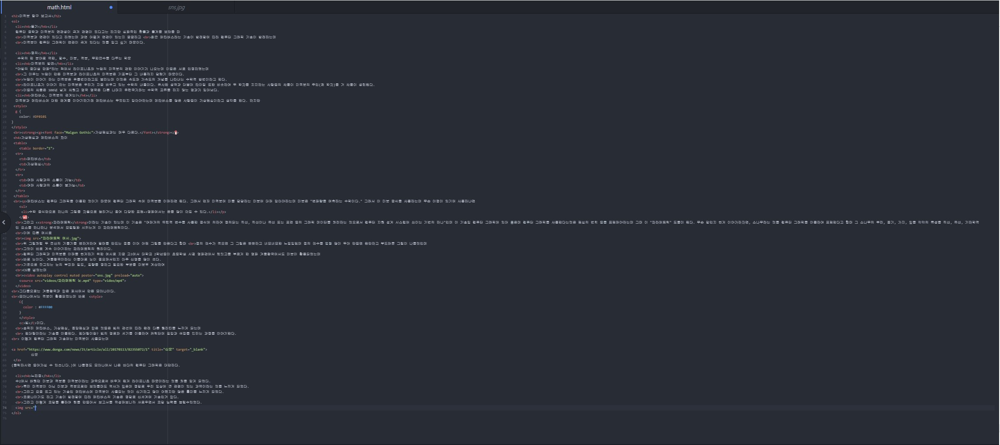

동기
미적분과 연관이 있다고 하였는데 과연 어떻게 연관이 있는지 궁금하고
최근 메타버스라는 기술이 발전함에 따라 컴퓨터 그래픽 기술이 발전하는데
미적분이 컴퓨터 그래픽이 연관이 크게 있다는 것을 알고 싶기 때문이다.
정의
미적분의 발견
그 이유는 뉴턴이 만든 미적분과 라이프니츠의 미적분은 기호부터 그 내용까지 달랐기 때문이다.
뉴턴이 이야기 하는 미적분은 유율법이라고도 불리는데 이것은 속도와 가속도의 개념을 나타내는 수학적 방법이라고 한다.
라이프니츠가 이야기 하는 미적분은 우리가 지금 배우고 있는 수학의 내용이다. 유사한 성격과 더불어 타이밍 또한 비슷하여 두 학자를 지지하는 사람들의 싸움이 미적분의 주인(첫 학자)을 거 싸움이 성립된다.
이들의 싸움은 100년 넘게 싸웠고 결국 영국은 다른 나머지 유럽국가와는 수학적 교류를 하지 않는 결과가 일어났다.
메타버스, 미적분의 관계는?
가상현실과 메타버스의 차이
| 메타버스 | 가상현실 |
| 여러 사람과의 소통이 가능 | 여러 사람과의 소통이 불가능 |
메타버스는 컴퓨터 그래픽을 이용한 것이기 때문에 컴퓨터 그래픽 속에 미적분을 이해하면 된다. 그래서 먼저 미적분에 미를 담당하는 미분에 대해 알아야하는데 미분은 "변화량을 예측하는 수학이다." 그래서 이 미분 공식을 사용하는데 무슨 이점이 있기에 사용하냐면
- 수학 공식만으로 하나의 그림을 자동으로 늘리거나 줄여 다양한 표현=>영화에서는 돈을 많이 아낄 수 있다.
그리고 <파라메트릭이라는 기술이 있는데 이 기술은 "여러개의 독립적 변수를 사용한 공식에 의하여 정의되는 직선, 직선이나 곡선 또는 표면 등의 그래픽 데이터를 처리하는 것으로서 컴퓨터 지원 설계 시스템에 쓰이는 기법의 하나"인데 이 기술잌 컴퓨터 그래픽에 있어 좋은데 컴퓨터 그래픽을 사용한다는것은 현실의 법칙 등을 표현해야하는데 그때 이 "파라메트릭" 도움이 된다. 무슨 말인지 쉽게 이야가하자면, 소나무라는 것을 컴퓨터 그래픽을 이용하여 표현한다고 할때 그 소나무의 뿌리, 줄기, 가지, 잎을 각각의 특성을 직선, 곡선, 기하학적인 요소를 하나하나 분석해서 모델링화 시키는게 이 파라메트릭이다.
이예 따른 예시로

위 그림처럼 두 접선의 기울기를 변하게하여 형태를 만드는 점을 이어 어떤 그림을 만든다고 할때
점의 갯수가 적으면 그 그림은 빳빳하고 네모네모한 느낌일텐데 점의 갯수를 엄청 많이 두어 만들면 완만하고 부드러운 그림이 나올것인데
그것이 바로 계속 이야기하는 파라메트릭의 원리이다.
컴퓨터 그래픽과 미적분을 이해를 쉽게하기 위한 예시로 지금 고3에서 대학교 2학년들이 초등학생 시절 영화관에서 렛잇고를 부르게 한 영화 겨울왕국에서도 미분이 활용되었는데
바로 눈이다. 겨울왕국이라는 이름대로 눈이 중요해서인지 아주 신경을 많이 썼다.
기준으로 잡고있는 눈의 부피와 밀도, 질량을 정하고 필요한 부분을 미분후 계산하여
CG를 넣었는데
그다음으로는 겨을왕국과 같은 회사에서 만든 모아나이다.
모아나에서는 적분이 활용되었는데 바로
솔찍히 메타버스, 가상현실, 증강현실과 같은 것들은 빛의 관섭에 따라 완전 다른 퀄리티를 느끼게 되는데
렌더링이라는 기술을 이용한다. 렌더링이란? 빛의 경로와 세기를 이용하여 캐릭터에 질감과 색깔을 입히는 과정을 이야기한다.
이렇게 컴퓨터 그래픽 기술에는 미적분이 사용되는데 신문 (클릭하시면 들어가실 수 있습니다.)에 나올정도 모아나에서 나온 바다의 컴퓨터 그래픽은 대단하다.
느낀점
특히 미적분이 아닌 미분과 적분으로만 보았을때도 역사가 깊은데 정말로 우리 일상에 큰 관련이 있는 과목이라는 것을 느끼게 되었다.
그리고 요즘 뜨고 있는 기술인 메타버스에 미적분이 사용되는 것이 신기하고 많이 어렵지만 많은 흥미를 느끼게 되었다.
코로나이기도 하고 기술이 발전함에 따라 메타버스의 기술은 정말로 신세계에 기술인거 같다.
그리고 이렇게 코딩을 통하여 웹을 만들어서 보고서를 작성해보니까 새로우면서 코딩 능력을 늘릴수있었다.

코딩 인증 사진